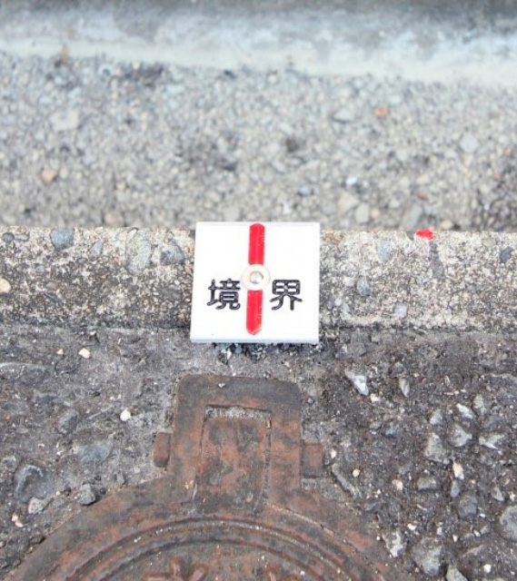

現場立ち合い前にやっておくこと一覧
希望着工日＆希望完工日を決めておく
解体工事会社に伝える希望の工事期間をあらかじめ決めておきます。
特に解体後にその土地の次の利用目的が決まっている場合には、完工日は非常に重要となります。立ち合い時に「〇月〇日に次の工事が始まるので、〇月〇日までに完工してほしい」という要望を伝えましょう。
工事後の土地活用の予定を決めておく
解体工事をしたあと、その土地をどのように活用するか決めておきます。
活用目的によって整地方法などが変わってくる場合がありますので、解体工事会社に伝えておく必要があります。選択肢としては、
-
更地（売却or借す）
-
駐車場
-
新築住宅
などがあります。ご家族とよく話し合って、不動産会社に相談してみるのもいいでしょう。
隣地との境界線付近の所有物の確認
両隣や裏の隣地との境界線付近にブロック塀やフェンスなどがある場合、その所有者が誰なのか明確にしておく必要があります。
もし所有者を調べずに解体してしまい、隣地の住人から「それはうちのフェンスだ」とクレームが来てしまった場合、大きなトラブルに発展したり、思わぬ出費となります。境界線ギリギリ、または曖昧な場所に立っている塀やフェンスなどがあれば、解体する前に隣地の住人に確認しておくことをおすすめします。
隣地との境界線の確認

両隣や裏の隣地との境界線を明確にしておきます。
土地の境界線を確認する方法としては、境界標や境界杭を探してみてください。境界標はコンクリート杭・金属プレート・金属鋲など種類は様々で、敷地の角にあります。
そのようなものが特に見つからず、境界線が曖昧になっている土地も多くあります。その場合は隣地の住人とも相談しつつ、土地家屋調査士に依頼して土地境界確定測量・地積更正登記を行うことをおすすめします。
境界標や境界杭があった場合、解体工事・外構工事などの際に壊してしまうことが多くあります。立ち合いの際に工事会社にもしっかり見せて、壊してしまわないよう伝えましょう。
補助金の有無の確認＆申請
解体工事を行うにあたり、自治体によっては補助金の申請ができる場合があります。
その場合は必要書類の準備期間を考慮すると最低でも工事開始の1～2ヶ月前には自治体に問い合わせを始めてください。
申請可能な時期や期間が限られている場合もありますので、できるだけ早めに自治体のホームページなどでこまめにチェックしておくといいでしょう。
契約者を決めておく
解体工事を行うにあたり、例えば父親の持ち物である建物を息子さんが代わりに工事手配を進める場合もあります。その場合に、契約は父親名義になるのか、息子さん名義になるのか、契約者となる人をあらかじめ決めておきましょう。
土地・建物の所有者に報告
その土地や建物の所有者が別の場所に住んでいる場合、解体工事をする旨をきちんと伝えておきましょう。
解体工事が始まってから所有者が「解体するなんて聞いてない」とトラブルになってしまうケースもあります。
まずはその土地や建物の所有者が誰なのか確認し、解体工事を進めることをしっかり報告して許可をもらっておきましょう。
ライフラインの状況把握
電気・ガス・水道・電話回線など、現在どのライフラインが生きているのか、それぞれ確認しておきます。
ライフラインを止めるのは工事直前でも大丈夫ですので、まず先に状況の把握だけしておきましょう。
隣地を作業場として借りる許可
解体工事を行う現場の前面道路が狭くて重機を使うスペースが確保できなかったり、車両が駐車できない現場もあります。その場合、もし隣地が更地ならそこを借りて使わせてもらうことができます。
重機が使用できるかできないかで見積り金額や工期は大幅に変わってきますので、前面道路が狭い土地の解体工事をする際に運良く隣地が更地だった場合は、その土地の持ち主に工事期間中、土地をお借りすることができるか確認しておきましょう。